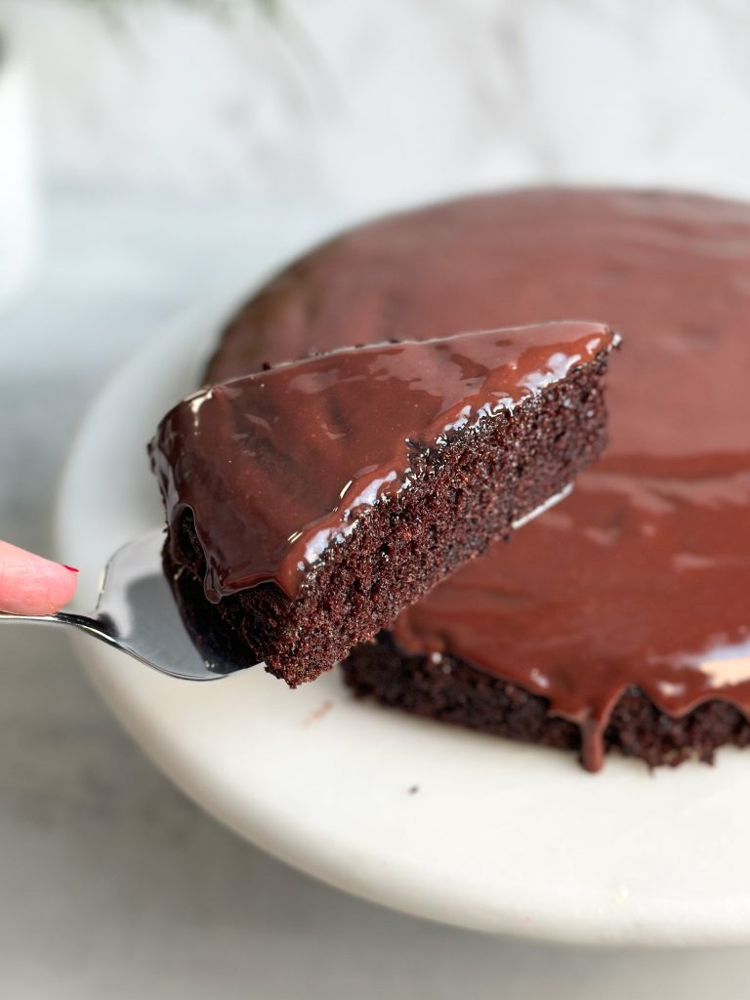

Chocolate Cake Recipe

Description
Indulge in rich decadence with this irresistible chocolate cake recipe.
Moist layer of cocoa-infused cake and a generously applied creamy
chocolate ganache, creating a dessert that's a true celebration
of chocolate lovers everywhere.
Ingredients
- 1 cup all purpose flour
- 3/4 cup granulated sugar
- 1 tsp baking powder
- 1/2 tsp baking soda
- 1/2 tsp salt
- 1 egg
- 1/3 cup vegetable oil
- 1/2 cup buttermilk
- 1 tsp instan coffee
- 1/4 cup boiling water
- 1/4 cup cocoa powder
- 1/4 cup cream
- 75g chocolate of choice
Steps for cake
- Pre-heat your oven to 350F (conventional) and prepare
a 9" cake pan with parchment paper and butter / oil
- If making your own buttermilk, mix 1/2 cup milk with 1/2
tablespoon vinegar, stir, and set aside
- Mix the flour, sugar, baking powder, baking soda, and
salt in a bowl. Sift the ingredients to make sure there are no lumps
- Break in the egg, and add the vegetable oil and buttermilk.
Use a whisk to gently mix until the ingredients come together
- In a smaller bowl, mix boiling water with cocoa powder
and instant coffee, and whisk until you get a shiny mix.
This step blooms the cocoa powder and brings out its lovely
chocolatey notes
- Add the bloomed cocoa powder mix to the cake batter,
and gently fold until combined
- Pour the batter into the prepared pan
- Bake at 350F for about ~20-25 minutes until a
toothpick inserted into the center comes out
with moist crumbs attached
- Wait 10 minutes and then turn out the cake onto a wire rack
Steps for ganache
- Bring the cream to a boil, and pour over the chopped
chocolate. Cover and rest for 5 minutes to allow the chocolate
to melt, then mix until you get a shiny ganache. Rest for
another 5 minutes so the ganache thickens slightly
- Pour the ganache over your cake, and you're ready to dive in!